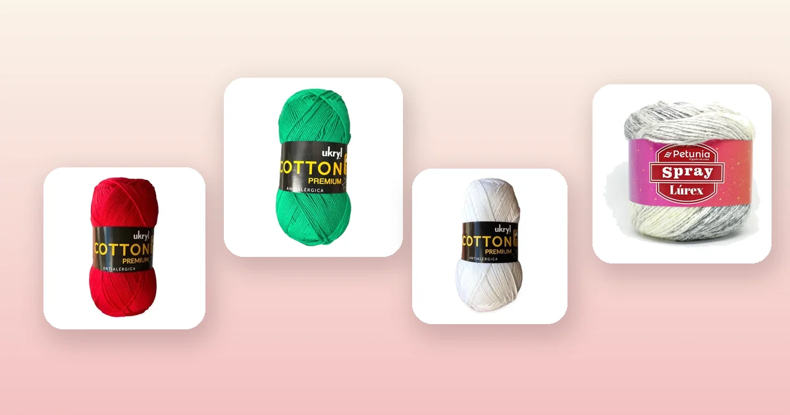

Proyectos de crochet
Adornos navideños a crochet: 7 ideas fáciles paso a paso
Estrellas, copos de nieve, esferas, arbolitos y bastones de caramelo: siete adornos navideños a crochet con patrones escritos ronda por ronda, qué hilo usar, cuánto demora cada uno y cómo almidonarlos para que duren muchas navidades.

Por qué tejer tus propios adornos navideños
Los adornos navideños a crochet son uno de los proyectos más buscados de fin de año, y con razón: son pequeños, se terminan en una tarde y cada uno queda único. Un árbol decorado con estrellas, copos y esferas tejidas a mano tiene una calidez que ningún adorno de plástico consigue, y además no se rompen si se caen, algo que agradecen las casas con niños y mascotas.
También son el regalo perfecto para el amigo secreto, para decorar paquetes o para vender en ferias navideñas. Como usan muy poco hilo, con dos o tres ovillos puedes decorar un árbol completo. Y en Chile, donde la Navidad llega en pleno verano, el hilo de algodón es ideal: es fresco de tejer con calor, no suelta pelusa y mantiene la forma de cada adorno año tras año.
Si recién empiezas, revisa antes los puntos básicos de crochet. Todos los adornos de esta guía se tejen con cadeneta, punto bajo, punto alto y punto raso, más el anillo mágico que explicamos en la guía de amigurumi para principiantes.
Materiales y qué hilo usar
- Hilo de algodón de 100 g en rojo, verde y blanco, los tres colores clásicos. El algodón define muy bien los puntos y acepta el almidón, así que las estrellas y los copos quedan firmes.
- Ganchillo de 2,5 a 3 mm. Para adornos conviene un ganchillo algo más fino de lo que indica la etiqueta: el tejido queda más apretado y el relleno no se asoma. Si dudas, revisa qué aguja o ganchillo usar.
- Un hilo con brillo para estrellas y copos de nieve. La lana con lúrex trae un hilo metálico que le da el toque festivo sin necesidad de agregar escarcha.
- Relleno siliconado (vellón) para las esferas y los arbolitos.
- Aguja lanera, tijeras y marcador de puntos para no perder el inicio de cada vuelta en las piezas en espiral.
- Cola fría o maicena para almidonar, y alfileres para dar forma.
- Limpiapipas (para el bastón de caramelo) y cinta o hilo dorado para colgar.
Estos son los hilos que más recomendamos para la temporada:
- Hilo de Algodón Rojo: un rojo intenso para esferas, gorritos de Papá Noel y bastones de caramelo.
- Hilo de Algodón Verde Navidad: el verde vivo de los pinos, perfecto para arbolitos y coronas.
- Hilo de Algodón Blanco: para copos de nieve, ribetes de gorritos y franjas de bastones.
- Petunia Spray Lúrex Gris Perla: un degradado de blancos y grises con hilo plateado que hace brillar estrellas y copos.
- Hilo de Algodón Mostaza: el tono dorado para la estrella de la punta del árbol.
1. Estrella de cinco puntas
La estrella es el adorno más rápido de esta lista: unos 20 minutos. Téjela en mostaza para la punta del árbol o en lúrex para colgar entre las ramas.
Ronda 1: anillo mágico, 1 cad (no cuenta como punto) y 10 pb dentro del anillo. Cierra el anillo tirando de la hebra y une con pr al primer pb. (10 pb)
Ronda 2 (las puntas): *5 cad. Teje de vuelta sobre la cadena empezando en la 2ª cad desde el ganchillo: 1 pb, 1 pma, 1 pa y 1 pad (punto alto doble). Salta 1 pb de la ronda anterior y haz 1 pr en el siguiente.* Repite de * a * 4 veces más. (5 puntas)
Corta dejando 15 cm de hebra para hacer el colgador. Las puntas quedan más anchas en la base y finas en el extremo porque los puntos van de más alto a más bajo. Almidónala para que quede plana y firme.
2. Copo de nieve
Los copos de nieve quedan preciosos en blanco o en lúrex gris perla. Toman entre 30 y 40 minutos y se tejen en cuatro rondas.
Ronda 1: anillo mágico, 3 cad (cuentan como 1 pa) y 11 pa dentro del anillo. Cierra y une con pr a la 3ª cad. (12 pa)
Ronda 2: 1 cad, 1 pb en el mismo punto. *3 cad, salta 1 pa, 1 pb en el siguiente.* Repite 4 veces más, termina con 3 cad y une con pr al primer pb. (6 arcos)
Ronda 3: pr hasta el primer arco. En ese arco: 3 cad, 1 pa, 3 cad, 2 pa. *En el siguiente arco: 2 pa, 3 cad, 2 pa.* Repite 4 veces más y une con pr. (6 puntas con un espacio de 3 cad)
Ronda 4: pr hasta el espacio de 3 cad. *En el espacio: 1 pb, 3 cad, 1 pb, 5 cad, 1 pb, 3 cad, 1 pb (tres piquitos). Luego 4 cad y pasa al espacio de la siguiente punta.* Repite alrededor y une con pr.
Sin almidón el copo queda blando y no se distinguen los piquitos, así que este paso es obligatorio. Fíjalo con alfileres estirando cada uno de los tres picos de cada punta.
3. Esfera navideña a rayas
La esfera es la versión tejida de la bola clásica del árbol. Se teje en espiral, igual que la base de cualquier amigurumi, y cambiando de color cada dos vueltas queda a rayas rojas y blancas. Mide unos 6 cm con hilo de algodón y ganchillo de 2,5 mm.
V1: 6 pb en anillo mágico. (6)
V2: 1 aum en cada punto. (12)
V3: *1 pb, 1 aum* x6. (18)
V4: *2 pb, 1 aum* x6. (24)
V5 a V9: 24 pb en cada vuelta (5 vueltas).
V10: *2 pb, 1 dism* x6. (18)
V11: *1 pb, 1 dism* x6. (12) Rellena firme.
V12: 6 dism. (6) Cierra pasando la hebra por los 6 puntos y tira.
Para el colgador, teje una cadena de 20 cad, dóblala y cósela en la parte superior. Puedes agregar un círculo plano de 6 pb en mostaza encima, como la tapa metálica de las bolas de vidrio.
4. Arbolito de Navidad
Un cono en verde navidad que funciona como adorno colgante o, en versión más grande, como figura para la mesa. Mide unos 8 cm de alto.
V1: 4 pb en anillo mágico. (4)
V2: *1 pb, 1 aum* x2. (6)
V3: *1 pb, 1 aum* x3. (9)
V4: 9 pb.
V5: *2 pb, 1 aum* x3. (12)
V6: 12 pb.
V7: *3 pb, 1 aum* x3. (15)
V8: 15 pb.
V9: *4 pb, 1 aum* x3. (18)
V10 y V11: 18 pb.
Teje aparte una base plana de 6, 12 y 18 pb (tres vueltas: anillo de 6, 6 aumentos, *1 pb, 1 aum*). Rellena el cono y cose la base. Decora con nudos franceses en rojo y blanco como si fueran luces, y corona la punta con una mini estrella de 5 puntas.
5. Bastón de caramelo
El bastón es el adorno más fácil de todos. Teje una cadena de unos 40 cm en blanco y otra igual en rojo. Si quieres más cuerpo, teje 1 fila de pb sobre cada cadena. Une los extremos de ambas tiras y enróllalas juntas en espiral alrededor de un limpiapipas de 15 cm, cuidando que no queden huecos entre las vueltas. Cose las puntas para que no se suelten y dobla el extremo superior en forma de J. En 20 minutos tienes un bastón con las rayas diagonales clásicas.
6. Guirnalda de estrellas
Teje entre 10 y 12 estrellas de cinco puntas alternando rojo, verde, blanco y lúrex. Para unirlas, empieza con 20 cad (la cola para amarrar). *Haz 1 pb en la punta superior de una estrella, sigue con 8 cad.* Repite con todas las estrellas y termina con 20 cad más. Queda una guirnalda de aproximadamente 1,5 m para la chimenea, una ventana o la baranda de la escalera.
7. Mini corona navideña
Teje una tira de 8 pb de ancho por unos 30 cm de largo en verde navidad. Dóblala a lo largo sobre un aro de alambre o de cartón de 10 cm y cose los bordes por detrás. Decora con tres esferas mini en rojo (6 pb en anillo mágico, 6 aum, 2 vueltas de 12 pb, rellena y cierra con 6 dism) y un lazo de cadenas en rojo. Es ideal para la puerta del dormitorio o para colgar en el centro del árbol.
Cómo almidonar y terminar los adornos
Las piezas planas (estrellas, copos, guirnaldas) necesitan almidón para mantener la forma. Hay dos métodos sencillos:
- Cola fría: mezcla cola fría y agua en partes iguales. Sumerge el adorno, retira el exceso con una toalla, fíjalo con alfileres sobre una plancha de plumavit cubierta con film plástico y deja secar 24 horas.
- Maicena: disuelve 1 cucharada de maicena en media taza de agua fría y calienta revolviendo hasta que espese un poco. Deja entibiar, empapa el adorno y fíjalo igual que en el método anterior.
Para el colgador usa la hebra final del tejido o una cinta dorada de 15 cm. Esconde todas las hebras con la aguja lanera antes de almidonar, porque después el tejido queda duro y cuesta pasarlas.
Cuánto demora cada adorno
Si quieres tener el árbol listo para el 24 de diciembre, organízate con estos tiempos aproximados para una tejedora de nivel inicial:
- Estrella de cinco puntas: 20 minutos.
- Bastón de caramelo: 20 minutos.
- Copo de nieve: 30 a 40 minutos, más el secado.
- Esfera a rayas: 45 minutos.
- Arbolito o gorrito: 1 hora.
- Guirnalda de 12 estrellas: 4 a 5 horas en total.
Tejiendo una hora al día desde fines de noviembre alcanzas a tener entre 25 y 30 adornos antes de Nochebuena, suficientes para un árbol mediano y algunos para regalar.
Errores comunes y soluciones
- Se ve el relleno entre los puntos. El ganchillo es demasiado grueso para el hilo. Baja medio milímetro o un milímetro de ganchillo y teje más apretado.
- La estrella se enrolla. Es normal antes de almidonar. Si sigue torcida después del almidón, la tensión de las puntas fue muy dispareja: vuelve a mojarla y fíjala con más alfileres.
- Pierdes la cuenta en las vueltas en espiral. Usa un marcador de puntos en el primer punto de cada vuelta y muévelo hacia arriba al empezar la siguiente.
- El rojo destiñe sobre el blanco. Antes de almidonar piezas de dos colores, prueba con un trozo de hilo en agua tibia. Si destiñe, almidona con agua fría y seca rápido en un lugar ventilado. Revisa más consejos en cómo lavar y cuidar la lana.
- Los adornos se ven torcidos colgados. El colgador no está centrado. Cóselo justo en el eje del adorno y, en las esferas, en el centro exacto de la última vuelta.